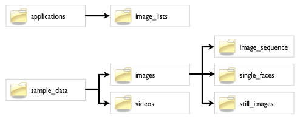

The Face Tracking and Recognition Software Development Kit (FTR-SDK) from Pittsburgh Pattern Recognition (PittPatt) provides tools to search images for faces, track faces in video sequences, pinpoint constituent landmarks in faces, and determine if faces are the same person using a straightforward C-language interface.
The FTR-SDK documentation starts with user's guides that discuss important concepts and explain how to use the FTR-SDK:
Documentation is also included for supplemental libraries that accompany the FTR-SDK:
An additional guide is provided to help tune applications with respect to processing speed, memory usage, and accuracy:
Users of earlier versions of the FTR-SDK should follow the steps outlined in the Migration Guide to bring their code up to date with this version of the SDK:
The following references provide detailed descriptions of the constants, types, and functions in the FTR-SDK:
The indexes span the FTR-SDK and all supplemental libraries:
Back to top.
In addition to the face detection, tracking, and recognition library, the FTR-SDK includes various other components that expedite the evaluation and/or integration of our software into your custom application:
Back to top.
We have added new features to enhance applications that detect, track, and identify faces in videos or photo collections. These new features will make your applications more accurate, more efficient, and easier to code.
Version 4.1 is a maintenance release that includes the following improvements:
Reduced latent memory usage on Windows
Added long path support on Windows
Initialization no longer changes the working directory
Added applications that illustrate how to create and compare known subject galleries
Added a known subject gallery as an optional parameter to the recognition-across_tracks application. It overlays names for tracks that match subjects in the known subject gallery, if specified.
Added more videos and single-face images
Minor bug fixes
New features in 4.0 include:
Improved the speed of detection, frontal landmark detection, template extraction, template comparisons, and clustering
Reduced the memory requirements for single-threaded detection calls and clustering
Reduced the size of templates
Added multi-gallery clustering, a two-stage clustering approach that greatly reduces the number of comparisons that must be performed
Added ability to set the min and max object sizes to search as a proportion of the image width
Added functions to read and write objects and tracks to disk
Added a number of robust and powerful sample applications
Added a large set of simple, yet powerful tools
Added ability to encode videos
Added SDK utilities to draw text overlays on images and videos
Added SDK utilities to time execution speed
For a complete version history, see FTR-SDK Version History.
Back to top.
A license ID and a license key are required to use the FTR-SDK. The ID and key are provided as constants
in a header file named pittpatt_license.h. The constants are named
my_license_id and my_license_key,
respectively. The license ID and key need to be passed to the SDK via the
ppr_set_license function.
Back to top.
Projects that make use of the FTR-SDK must be compiled against the FTR-SDK library. If using
sdk_utils.c, the
PittPatt Raw Image I/O Library,
PittPatt Video I/O Library, and
PittPatt Raw Image Library
libraries must also be linked because they are needed by some SDK utility functions.
Mac OS X users will need to set their DYLD_LIBRARY_PATH environment variable to include the
location of the lib directory, which contains the dynamic libraries needed to run programs built
using the SDK.
The commands below show how to compile and link the
recognition-rank_matching_faces
example in Linux and Windows. The compilation examples below assume that the commands
will be executed in the applications directory.
% gcc ../source/applications/recognition-rank_matching_faces/recognition-rank_matching_faces.c \
../source/applications/recognition-rank_matching_faces/parse_command_line.c \
../source/utilities/sdk_utils.c ../source/utilities/sdk_draw_utils.c \
../source/utilities/sdk_cmd_line_utils.c ../source/utilities/sdk_profile_timers.c \
-I../include -I../source/utilities -L../lib -lpittpatt_ftr_sdk -lpittpatt_raw_image_io -lpittpatt_video_io \
-lpittpatt_raw_image -Wl,-rpath,../lib -o recognition-rank_matching_faces
% gcc ../source/applications/recognition-rank_matching_faces/recognition-rank_matching_faces.c \
../source/applications/recognition-rank_matching_faces/parse_command_line.c \
../source/utilities/sdk_utils.c ../source/utilities/sdk_draw_utils.c \
../source/utilities/sdk_cmd_line_utils.c ../source/utilities/sdk_profile_timers.c \
-I../include -I../source/utilities -L../lib -lpittpatt_ftr_sdk -lpittpatt_raw_image_io -lpittpatt_video_io \
-lpittpatt_raw_image -o recognition-rank_matching_faces
% cl ..\source\applications\recognition-rank_matching_faces\recognition-rank_matching_faces.c ^
..\source\applications\recognition-rank_matching_faces\parse_command_line.c ^
..\source\utilities\sdk_utils.c ..\source\utilities\sdk_draw_utils.c ^
..\source\utilities\sdk_cmd_line_utils.c ..\source\utilities\sdk_profile_timers.c ^
-I..\include -I..\source\utilities ..\lib\pittpatt_ftr_sdk.lib ..\lib\pittpatt_raw_image_io.lib ^
..\lib\pittpatt_video_io.lib ..\lib\pittpatt_raw_image.lib
The applications directory contains a build script that compiles and links all of the example
programs. In addition to the build script, Windows projects are provided for Microsoft Visual Studio 2008,
Microsoft Visual Studio 2005, and Microsoft Visual Studio .net.
sdk_utils.c, sdk_draw_utils.c,
sdk_cmd_line_utils.c, and sdk_profile_timers.c is provided for use with the
example programs. The support code is not part of the SDK and it is not recommended for use in production code.
Back to top.
Sample data is provided as a way to quickly get started using the example programs and to test user applications. Data is provided for detection, tracking, and recognition. The sample data is organized as follows:

Sample Data Directory Structure
The image_sequence directory contains a sequence of 600 frames that can be used with
the tracking examples. The videos directory contains several video files
that can also be used as input to the tracking examples.
The still_images directory contains 240 still images, each containing one or more faces
for a total of over 350 faces. Most of the faces are frontal, but some profile views are included as well.
The single_faces directory contains images with one frontal face per image. All of the
still images and single faces are useful for running detection experiments.
The applications directory has a subdirectory named image_lists. Several
image lists are provided as an easy way to specify subsets of the sample data. There is an image list for the
image sequence mentioned above, and there are also image lists for the data in the still_images
and single_faces directories.
The image lists use relative paths, so without modification they
will only work if executables are run in the applications directory. For Visual Studio users,
the visual_studio directory (in the applications directory) also contains
an image_lists directory with paths that are set appropriately for running applications from
Visual Studio.
The image lists are organized in a way that is useful for running recognition experiments. The still images are divided into subsets. The still image subsets are labeled A, B, C, and D. The subsets are grouped according to the people that appear in the images. Many of the same people appear throughout the images within a subset. The subsets are each broken down into two smaller sets. Having the images organized in this manner provides a great way of experimenting with recognition. If a gallery is created for each of the eight image lists, there will be a lot of overlap between subjects when comparing the two image lists within a subset, but little overlap when comparing image lists between two subsets.
The single face lists are also organized with recognition in mind. Image lists are provided for all of the single face image, as well as only the male subjects and only the female subjects. There are 18 different subjects in the set, and six additional image lists are provided, each containing 3 different subjects. This is useful for running smaller recognition experiments.
Back to top.
A set of robust applications are provided not only to serve as example source code, but also to provide a way to easily evaluate the FTR-SDK. The applications provide a full set of command-line options to control input parameters and ways of visualizing results.
The example applications are described in their corresponding User's Guides:
Back to top.
A set of tools are included for working with files that have been written from the FTR-SDK and to perform other simple tasks from the command line. Source code is provided for all of the tools, so they also serve as simple examples of SDK usage.
Back to top.
© 2004-2010 Pittsburgh Pattern Recognition, Inc.